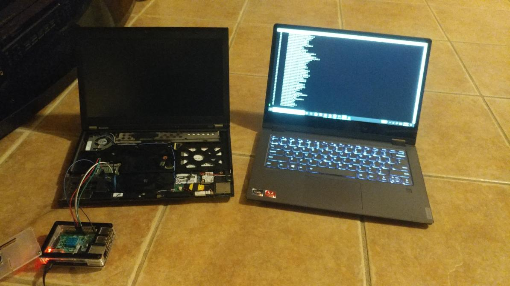
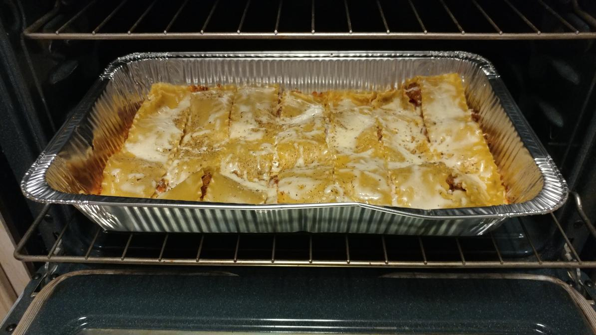

Hello to whoever is viewing this page. As you can see at the top of the page, my name is Kenneth Alcineus, and I am 18 years old. I go by either Kenneth or Kenny.
I am a first generation Haitian-American. Both my parents were born in Haiti, but I was born in Florida. I have a brother and a sister and I am the oldest of my siblings. We moved from South Florida to North Florida about 15 years ago and we have stayed here ever since.
I have always enjoyed using and learning about computers. I also enjoy loading custom software on a variety of devices. One project I have done was compiling and flashing a custom BIOS called Coreboot from a Raspberry Pi to an old Lenovo ThinkPad. While Coreboot was successfully installed, I later ran into problems so I ended up using a modified version of the laptop's stock BIOS instead.
I also really like food, whether I am eating it or making it. However, I do admit that I am a picky eater. Not too long ago, I have managed to make some decent lasagna. With lasagna being so difficult to make from scratch, I needed some help from my siblings.
My goal is to obtain a Bachelor of Science in Computer Science at University of North Florida. I may consider pursuing a master's degree if I see great potential in my knowledge of computing and quality of life improving as a result. I have attended St. Johns River State College as a dual enrollment student and graduated with an Associate in Arts degree at the same time of graduating with a high school diploma.
My degrees and certificates, including planned ones are: